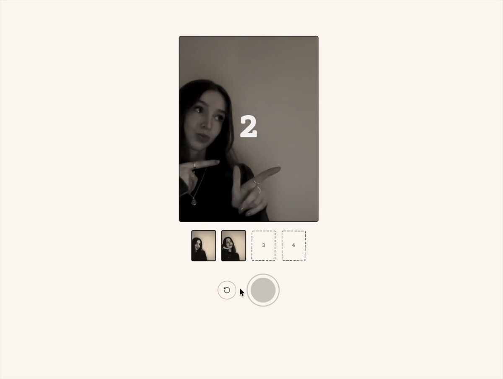
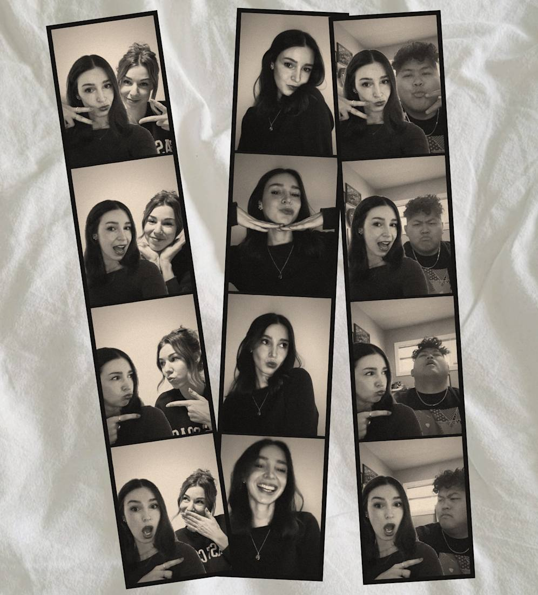
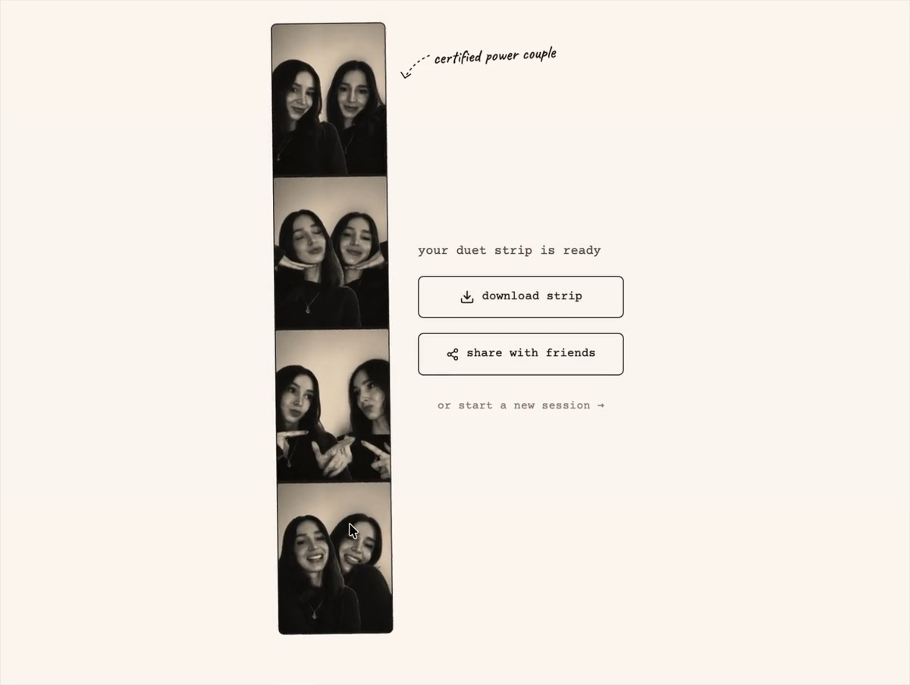
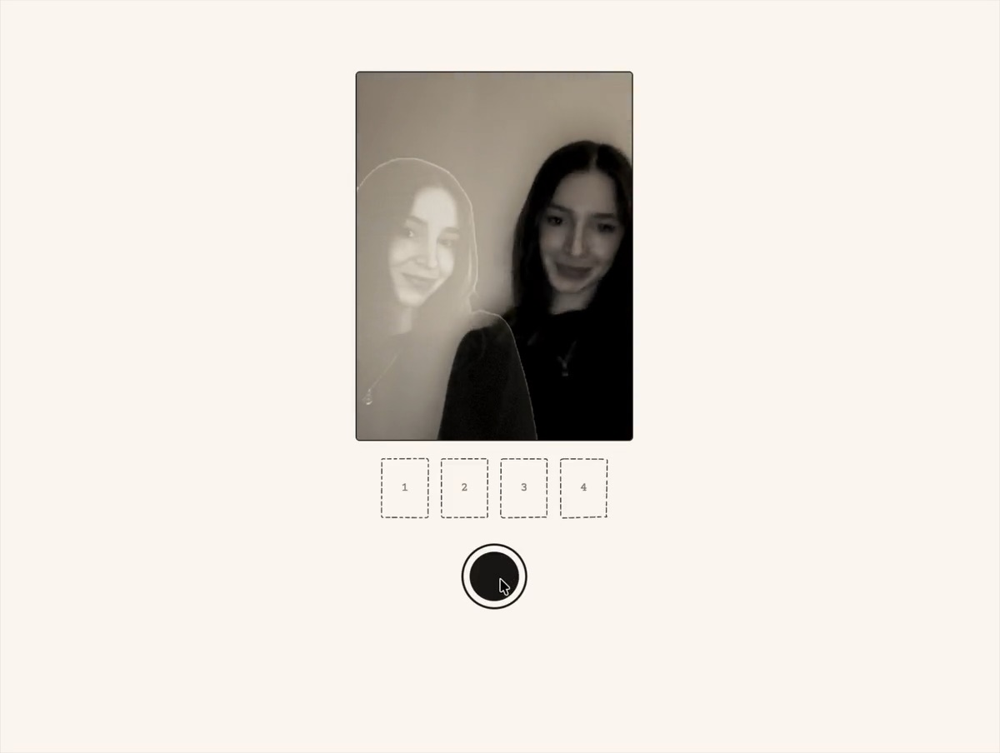

02 — Duet Booth — Figma Make-a-thon winner
A photobooth for two people in different places
Take photos together, even when you’re not. Snap four, send a link, and your friend fills in the other half of the strip.
Overview
A one-day build that won at the Figma Make-a-thon.
I designed and built Duet Booth on my own, in Figma Make, for the Figma Make-a-thon with Contra. Two people take photos remotely, at different times, and the booth stitches them into one strip as if they’d been sitting side by side.
The brief
Imagine the next wave of software interactions, or push a familiar one somewhere unexpected.
The result
The Reimagining Iconic Interactions award, a feature on Figma’s blog, and an app anyone can use.
The idea
Vintage photobooths are having a moment. But the booth isn’t always nearby, and sometimes the person isn’t either.
Honestly, I made it because I wanted it. My feed was full of girlies with their photobooth strips, the FOMO was real, and I wanted cute ones with my sister.
The photobooth has barely changed since the 1920s. It’s still a box you both have to squeeze into at the same time. Photobooths turned photography into something more accessible, immediate and shared; Duet Booth keeps the shared part and drops the box.
What if a photobooth could hold two people in two places?
How it works
Four steps, one strip.
-
1
Snap four pics
You take your half of the strip, with a little hype from the booth after every shot.
-
2
Send a link
One link to the person you’re missing. They can open it whenever suits them.
-
3
Your friend steps in
They see a faint ghost of you in the frame, so they can pose right beside you.
-
4
Get one strip
The booth cuts you both out, layers you side by side, and prints one gritty, vintage strip. Tape it to your wall like it’s 2007.


Design
A booth with a personality, not just a camera with a filter.
Everything leans into the feel of a real booth: typewriter type, a warm off-white, a strip tilted like it’s been tossed on a table, and gritty black-and-white prints. The details carry the rest.

The ghost
The second person poses against a faint outline of the first, so the two halves line up like they shared one booth.
The hype
After every shot the booth says something nice: “oh, hello gorgeous,” “okay, you ate that.” Duos get “certified power couple.”
The darkroom
The wait is part of the ritual: “mixing the chemicals,” “hanging photos to dry,” then “your duet strip is ready.”
Taken at different times, not live
The booth never asks both people to be free at once. One sends a link; the other steps in whenever they can.
Because…
Distance usually means time zones and busy schedules too. Dropping the “together right now” requirement is what makes it work for the people who need it most.
Building it
Built in a day, in Figma Make, by keeping my focus on the experience.
Under the hood, it’s a lot: live camera feeds, cutting two people out of their backgrounds and compositing them into one frame, and keeping two sessions in sync through a shared link. Figma Make handled the engineering, which kept me iterating on how it felt.
“It let me stay in a creative flow and iterate quickly, which felt really important for something this interaction-driven.”
Me, in Figma’s write-up of the winners

Try it
It’s live. Grab a friend.
Take a strip below, or open duet-booth.figma.site on its own.
Reflection
What I learned
Solve a real gap.
Duet Booth started as something I wanted that didn’t exist. It helps when you’re solving a real-life problem, not an imagined one: you already know who it’s for and what it should feel like.
[Lesson two.]
[A sentence or two on what you’d add next.]
Next project
Trip Ninja →